Anthropic vient de lancer Opus 4.7, et Internet est divisé sur la question. La moitié des gens disent que c'est une mise à niveau massive. L'autre moitié qualifie cela de mythe amoindri et affirme que cela ne vaut pas le battage médiatique. Et honnêteté, après avoir examiné les benchmarks moi-même, la vérité est quelque part au milieu, et c'est en fait plus intéressant que ce que l'un ou l'autre camp prétend. Alors laissez-moi décortiquer exactement ce qui a changé, ce qui est vraiment bon, et là où il pèche encore, parce que ce n'est pas le modèle que tout le monde attendait. Alors tout d'abord, qu'est-ce qui s'est réellement amélioré ? Le code agentique a fait un bond
Interface & Outils : Navigateur web affichant le réseau social X et une page de benchmarks comparative d'intelligence artificielle.
Contenu textuel & Code : Tableau de benchmarks techniques incluant Agentic coding, Multidisciplinary reasoning, Agentic search, Agentic financial analysis et autres métriques comparatives avec des pourcentages précis (ex: 64.3%, 87.6%).
Action / Démonstration : Navigation et présentation visuelle des résultats de benchmarks pour analyser objectivement les capacités d'Opus 4.7.
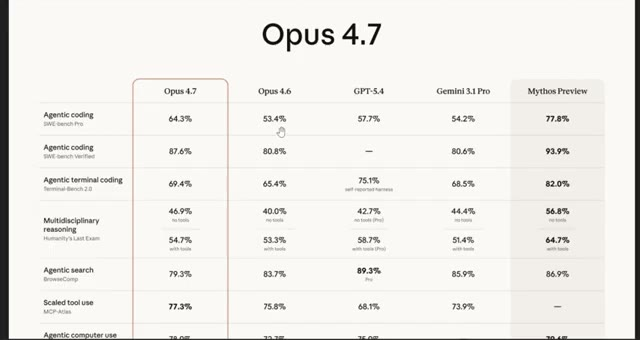
🔍 Agrandir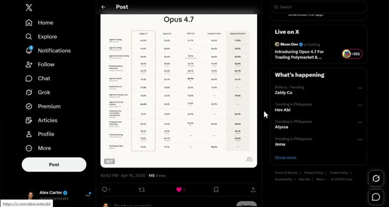
🔍 Agrandirde 53 % jusqu'à 64 %. C'est une augmentation de 11 points, et c'est désormais nettement meilleur que GPT et Gemini en matière de programmation. Gardez à l'esprit qu'il s'agit d'un fossé massif dans le monde de l'IA. Le raisonnement visuel a également bénéficié d'une énorme amélioration, passant de 69 % à 82 % sans outils et de 84 % à 91 % avec des outils. Il peut désormais lire des images à une résolution plus de trois fois supérieure. Donc, si vous l'utilisez pour analyser des graphiques, des diapositives ou des documents, ce sera beaucoup plus précis dès maintenant. L'analyse financière par agent est passée de 60 %
Interface & Outils : Interface web de Gemini, tableau de benchmarks d'IA, et graphique de trading (Bybit / TradingView).
Contenu textuel & Code : Scores de performance en pourcentage (ex: 64.4%, 91.0%, 82.1%) pour différentes tâches d'IA et cours du Bitcoin (BTCUSDT Perpetual Contract).
Action / Démonstration : Présentation comparative des capacités d'IA et analyse de graphique boursier.
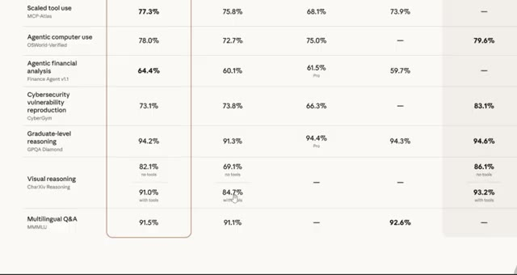
🔍 Agrandir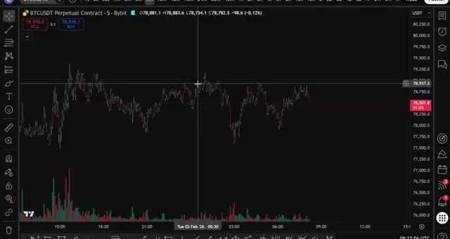
🔍 Agrandirà 64 %. Maintenant, je sais que cela ne parait pas énorme, mais dans les benchmarks d'ingénierie financière, c'est en réalité considéré comme mythique dans certains cas. Et pour quiconque développe des agents de trading autonomes, ce modèle est conçu pour cela. Le raisonnement de niveau universitaire se situe à 94,2 %, pratiquement inchangé par rapport à avant, ce qui est déjà insensé. Maintenant, est-il meilleur que Mythos ? Pas tout à fait.
Interface & Outils : Tableau de bord de benchmarks de performance de modèles IA.
Contenu textuel & Code : Lignes de benchmarks incluant « Agentic financial analysis » avec un score de 64.4 %, ainsi que d'autres tests comme « Agentic terminal coding », « Multidisciplinary reasoning », et « Graduate-level reasoning » (GPQA Diamond).
Action / Démonstration : Le présentateur met en avant le score de 64.4 % dans la catégorie d'analyse financière agentique.
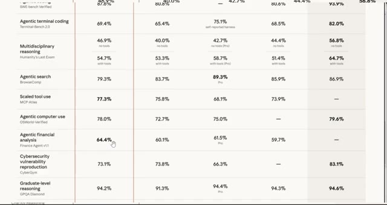
🔍 AgrandirMythos gagne toujours sur la plupart des benchmarks. Le codage agentique sur Mythos est à 77,8 % contre 64,3 % ici. Gardez donc cela à l'esprit. Mais en tant que modèle Opus, c'est le meilleur à ce jour, et c'est une mise à niveau très solide par rapport au 4.6. Il y a aussi de nouvelles fonctionnalités qui valent la peine d'être connues. Sur l'API, il y a un nouveau niveau d'effort appelé xhigh, situé entre high et max, vous donnant plus de contrôle sur la vitesse de raisonnement sur les problèmes difficiles. Et dans Claude code, il y a une nouvelle commande slash alter review qui lance une session de revue dédiée et signale ce qu'un examinateur attentif repérerait. C'est en fait très utile. Maintenant,
Interface & Outils : Tableau comparatif web et terminal de commandes Claude Code (CLI).
Contenu textuel & Code : Scores de performance sur les benchmarks de codage agentique (SWE-bench Pro, Terminal-Bench 2.0) et messages d'information du terminal.
Action / Démonstration : Présentation comparative des scores des différents modèles et affichage du terminal Claude Code.
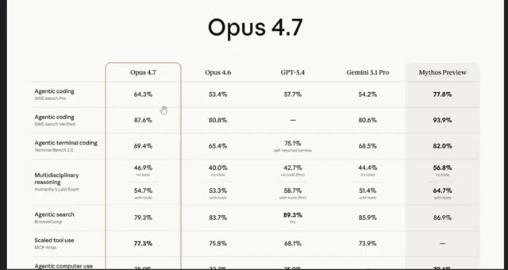
🔍 Agrandir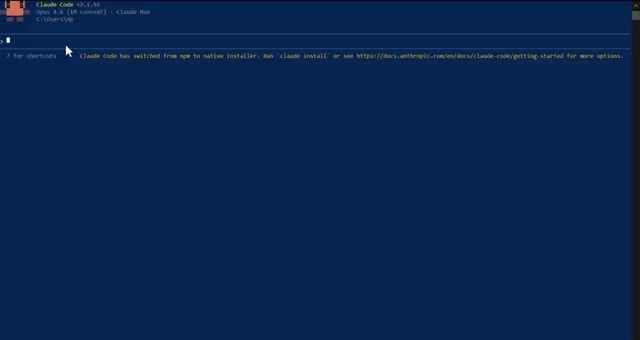
🔍 AgrandirPour être juste, beaucoup de personnes dans ce domaine disent que ce n'est pas si impressionnant que ça. Et honnêtement, je comprends. Presque chaque test de référence se situe dans une fourchette de 50 % par rapport à Mythos. Il est moins bon pour l'utilisation du navigateur que le précédent opus, et beaucoup de gens le qualifient de Mythos bridé plutôt que de véritable modèle de nouvelle génération. Le clan de ceux qui auraient souhaité que ce soit Mythos n'a pas tort. Et si l'on prend encore plus de recul, Anthropic peut sembler en avance en ce moment en raison de la quantité pure et simple de sorties.
Interface & Outils : Tableau de benchmarks de performance d'IA et interface web du réseau social X (Twitter).
Contenu textuel & Code : Tableaux de métriques chiffrées (évaluations de modèles comme Opus 4.7, GPT-4, Mythos) et tweets associés.
Action / Démonstration : Présentation et analyse comparative des performances de différents modèles d'intelligence artificielle à travers des benchmarks.
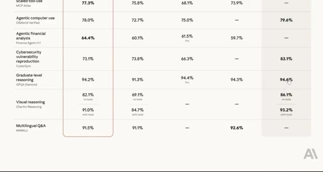
🔍 Agrandir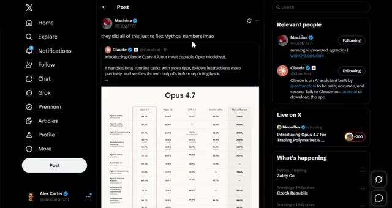
🔍 AgrandirMais regardez la comparaison de qualité. Codex a toujours une longueur d'avance sur le nouveau produit de bureau Cloud Code, et la super application d'OpenAI est honnêtement dix fois meilleure que ce que nous voyons ici. Et c'est là que ça devient intéressant et dont beaucoup de gens ne parlent pas. Sur le benchmark de contexte MRCRV2, qui teste la façon dont le modèle gère les longues fenêtres de contexte, Opus 4.7 obtient en fait des résultats nettement moins bons que le 4.6. À un contexte de 256k, le 4.6 se situait à 91,9 %.
Interface & Outils : Interface du réseau social X (Twitter) et interface web d'OpenAI.
Contenu textuel & Code : Publication sur X montrant des scores de benchmark (Opus 4.7 Max et Opus 4.6 sur MRCR v2 8-needle) avec pourcentages et graphiques statistiques.
Action / Démonstration : Présentation de publications et de données de benchmarks comparatifs d'intelligences artificielles sur les réseaux sociaux.
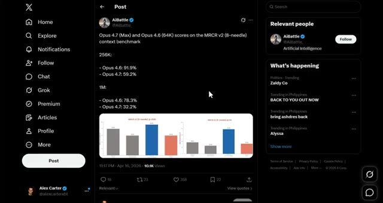
🔍 Agrandir4,7 chute complètement jusqu'à 59,2 %. Et à 1 million, 4,6 était à 78,3 %. 4,7 tombe à 32,2 %. C'est une régression massive. Donc, si vous travaillez avec de très longs documents ou de grandes bases de code, gardez cela à l'esprit car en ce moment, le 4,6 est en réalité le meilleur choix pour ce cas d'utilisation spécifique. Donc oui, une mise à niveau solide par rapport au 4,6, il bat Mythos et l'ingénierie financière, offre un excellent raisonnement visuel, fonctionne bien sur les tâches à long contexte, mais ce n'est pas le bond en avant que tout le monde espérait.
Interface & Outils : Application X (Twitter) affichant des publications de benchmarks et graphiques analytiques.
Contenu textuel & Code : Scores et graphiques du benchmark MRCR v2 (8-needle) à 256k et 1M de contexte, ainsi qu'un tableau comparatif des capacités des modèles d'IA (Opus 4.7, Opus 4.6, GPT-5.4, Gemini 3.1 Pro, Mythos Preview).
Action / Démonstration : Présentation et analyse comparative des scores de régression et de performance entre les versions d'IA.
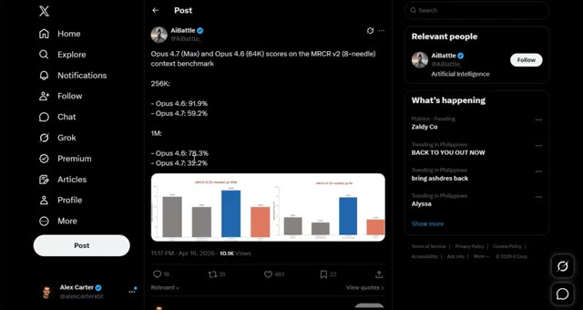
🔍 Agrandir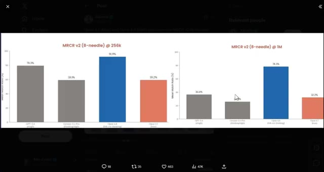
🔍 Agrandir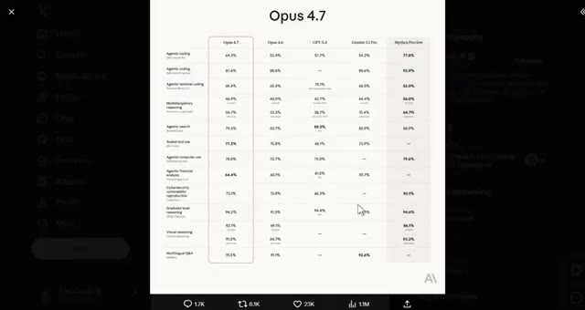
🔍 AgrandirMême pas comparable à ce qui arrive avec des modèles comme Spud à l'avenir. Et regardez, c'est exactement pour cela qu'il est important de savoir de quel côté de l'IA vous vous situez. Au cours des prochaines années, il va y avoir deux types de traders. Celui qui utilise l'IA et se simplifie la vie, et celui qui ne le fait pas et fait encore tout manuellement. Même marché, résultat très différent.
Interface & Outils : Interface web du réseau social X (Twitter).
Contenu textuel & Code : Publication textuelle : "Why are people still trading themselves in 2026? > AI is smarter than you, > AI is faster than you, > AI never sleeps, > AI has no emotions, > AI doesn't have a bad day, > AI never breaks the rules, > AI manages risk better".
Action / Démonstration : Affichage et lecture d'un tweet argumentant sur la suprématie de l'intelligence artificielle face aux traders humains en 2026.
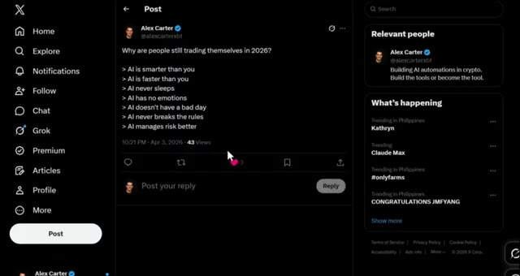
🔍 AgrandirJe lance la communauté AI Trade Edge. Chaque invite, bot, agent, modèle et guide étape par étape que j'utilise personnellement, le tout au même endroit. Intégration de TradingView, trading sur Telegram, suivi des baleines sur Hyperliquid, tout y est déjà. Et tout ce que je construirai à l'avenir y sera directement ajouté. 79,99 $ par mois. Les 100 premiers membres bloquent ce tarif de façon permanente.
Interface & Outils : Interface web (Whop), application de messagerie (Telegram).
Contenu textuel & Code : Tarifs d'abonnement à la communauté (79.99 $/mois), instructions d'appairage de bot Telegram (/start, /status, commandes de liaison avec Claude Code).
Action / Démonstration : Présentation de l'accès payant à la communauté et démonstration du bot Telegram de pont vers Claude Code.
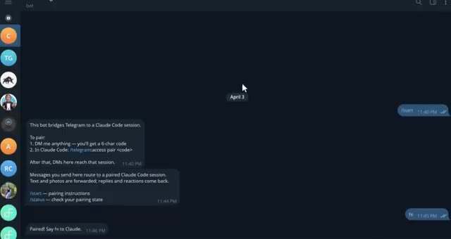
🔍 Agrandir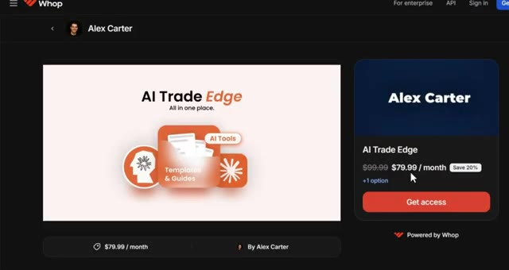
🔍 AgrandirAprès cela, le prix augmente. Un seul bon trade le rentabilise. Le lien est dans la description. Quoi qu'il en soit, je vais tester ce modèle au cours des prochains jours, en me penchant spécifiquement sur ce qu'il donne avec le trading agentique et si cela vaut vraiment le coup d'y passer. Je vous tiendrai au courant de cela. Dites-moi dans les commentaires ce que vous pensez de ce nouveau modèle. Êtes-vous impressionnés ou vous attendiez-vous à plus ? Quoi qu'il en soit, Anthropic est clairement en train de nous préparer du lourd en ce moment. Opus 4.7 est disponible aujourd'hui sur Claude.ai et sur toutes les principales plateformes cloud. Si vous êtes
Interface & Outils : Tableau comparatif de performances d'IA et graphique TradingView pour le trading de cryptomonnaies.
Contenu textuel & Code : Scores de performances comparés pour Opus 4.7 (Agentic coding, reasoning, financial analysis) et graphique de prix BTCUSDT avec signaux Long/Short et RSI.
Action / Démonstration : Analyse comparative des capacités du nouveau modèle d'IA et visualisation des signaux de trading sur un graphique de cryptomonnaies.
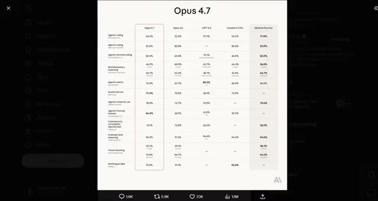
🔍 Agrandir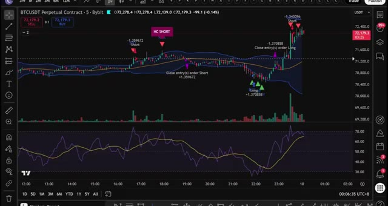
🔍 Agrandirque vous construisiez quoi que ce soit d'agentique, des bots de trading, des outils de codage, de l'analyse financière, cela vaut le coup d'y jeter un œil. Si vous voulez voir la démonstration complète sur la façon de configurer l'exécution de trades automatisés en utilisant Telegram et TradingView, allez voir la vidéo qui apparaît à l'écran dès maintenant. Si vous avez trouvé cela utile, laissez un pouce bleu. Cela aide vraiment la chaîne. Abonnez-vous si ce n'est pas déjà fait, et je vous vois dans la prochaine.
Interface & Outils : Application Telegram, interface de chat et bot de trading automatisé.
Contenu textuel & Code : Détails de positions de trading exécutées : BTCUSDT LONG 5x, SOLUSDT LONG 5x, DOGEUSDT SHORT 5x avec prix d'entrée, SL et TP. Prompt de configuration de trade automatisé visible dans la boîte de légende.
Action / Démonstration : Configuration et envoi de commandes d'exécution de trades automatisés via l'interface du bot Telegram couplé à des graphiques.
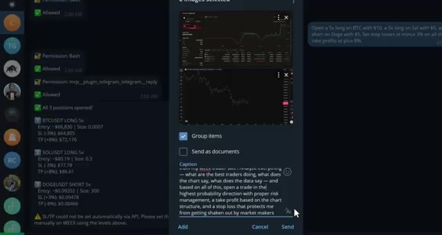
🔍 Agrandir